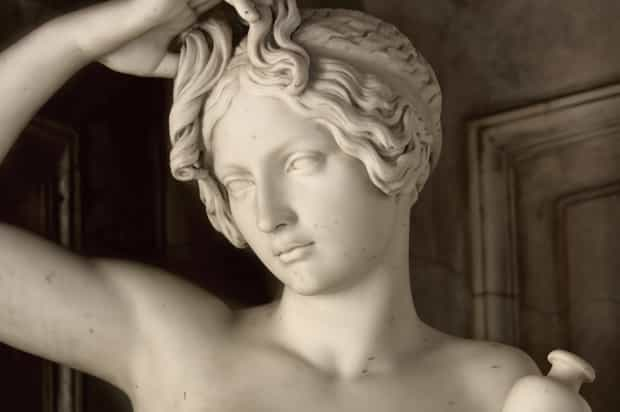
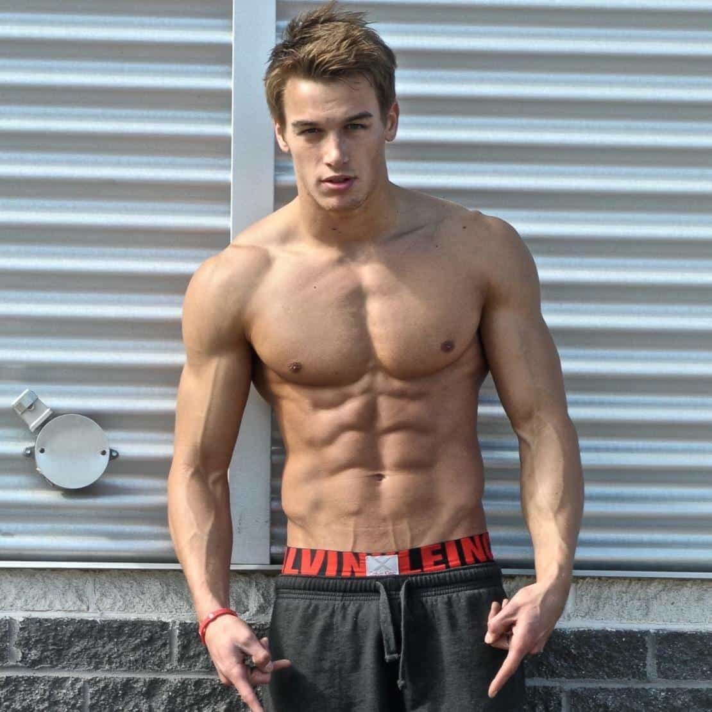

< < < Back
Why Beauty Is Not As Subjective As Feminists Insist – Return Of Kings
Roosh’s article 27 Attractive Girls Who Became Ugly Freaks Because Of Feminism has sparked a heated debate. One of the premises of Return Of Kings and neomasculinity is that female beauty is at least largely objective and a real biological phenomenon, linked to fertility. But many people, at least in public, regard beauty as being merely in the eyes of the beholder.
It is important to explore why this is not the case. Furthermore, it is important to have an open mind and realize that things may not always be black or white. Moreover, the outlook on male beauty can also be further addressed, at least to the extent to which it is linked to game and the notion that a man’s character reflect upon his appearance (at least in part).
Philosophical, cultural and biological dimensions have to be taken into account. Therefore I have used Stanford Encyclopedia of Philosophy’s article on beauty, the Italian semiologian Umberto Eco’s twin work History of Beauty (2004) and On Ugliness (2007), David Buss’ article, and Margaret F. Braun and Angela Bryan’s article as points of reference.
The history of beauty
As Eco asserts, “Beauty has never been absolute and immutable but has taken on different aspects depending on the historical period and the country.” There is always a cultural and historical context in which beauty is understood. The Greeks, at least some of them, regarded beauty and the good as closely intertwined, but Plato and Aristotle could not agree on what beauty exactly is.
However they both agreed that beauty, often in relationship to art but also including human appearance, is objective in that sense that it conforms more or less to natural proportions and symmetrical relationships. Throughout Western history, as Eco’s collection of pictures shows, there has been much geographical and cultural variation with regard to beauty. Since people are different, cultures may differ over time and space, and so will the notions on beauty.

What is striking, however, is that although historical variation is palpable and that cultural relativism and “postmodernist” subjectivism have influenced people’s ways of thinking, the objective proportions have remained or been reinvigorated within the frames of Western popular culture. As much as we might complain about for example Ariana Grande’s ethical and intellectual flaws, she indeed has a beautiful face and body.
With the rise of wellness culture, fashion and cosmetics it has never been easier for the naturally beautiful to optimize their potential (and to ruin the same by means of fast food and various anti-beauty measures). Popular culture capitalizes on evolutionary biology (and as paradoxical as it may seem also on people’s penchant for the gruesome).
Ugliness is the obvious opposite of beauty and has correspondingly changed throughout history, as Eco’s collection manifests. But even the hideous is objective in that sense that is often linked to death, disease or sometimes malign human behavior. Death and disease may signify twisted proportions. A good illustration of how beauty and ugliness can sometimes merge, are depictions of destructive female goddesses such as Lilith. A combination of opposites requires objective components.
Female fertility as a sign of beauty
David Buss mentions smooth skin, lustrous hair and full lips as manifestations of high female fertility potential. Does that mean that body composition is irrelevant and merely subjective? Overweight is indeed not an indicator of high level of health, and hides the facial and physical features of females. Partly it might be a particular cultural phenomenon rather than a universal characteristic, but in the West and the East slender-limbed bodies dominate both the past and the present.
Margaret F. Braun and Angela Bryan stress the significance of a healthy look:
Due to increased estrogen, healthy premenopausal women display a gynoid fat pattern, with more fat deposited on the lower body, including the hips, thighs, and buttocks. This gynoid pattern is considered a characteristically healthy, feminine body shape (Singh, 1994). Singh found that body shapes could be accurately differentiated by calculating a waist-to-hip ratio. A smaller ratio results in a more curvaceous, hourglass figure (Markey, Tinsley, Ericksen, Ozer, & Markey, 2002; Singh, 1993a, 1994). It is believed that to increase their own inclusive fitness, men have evolved mechanisms that allow the detection of reproductive health in women (…) In a series of studies, male participants consistently rated line drawings of female figures that represented a normal weight and a healthy waist-to-hip ratio of 0.7 as most physically attractive (Singh, 1993a, 1993b, 1994; Singh & Suwardi, 1995). These findings have been successfully replicated by several researchers (Furnham et al., 2002; Henss, 2000; Markey et al., 2002) and do not seem to be significantly affected by ethnicity, gender, or age (Singh & Suwardi, 1995; Markey et al., 2002).
Perhaps it is only in certain settings, such as when women show their legs on the catwalk, that the really thin is considered prettier than a somewhat higher body weight. The last picture below, as it seem to me, gives a clear hint of a quite optimal height/weight ratio.

Male beauty as a manifestation of character
As Eco notes, Karl Marx asserted that money can compensate for ugliness. That is partly true even now, at least in developing countries, but male beauty has become more important in more equal societies. Male beauty optimization can likewise be accomplished with the help from physical exercise, dieting and grooming.

Also for males there are cultural overlaps as well differences. For instance, in East Asia males look more or less feminine compared to other racial groups, and that is what females in those regions have to work with, so to speak. Margaret F. Braun and Angela Bryan point to the relative importance of a generically masculine physique:
There are specific reproductively relevant physical characteristics that ought to influence women’s evaluations of male attractiveness. First, both sexes (not just men) ought to value high genetic quality, and an individual’s physical attractiveness is considered to be an honest advertisement of their reproductive capabilities and gene quality (Buss, 1989; Buss, Shackelford, Kirkpatrick, & Larsen, 2001). Second, there is some evidence that women focus on male physical cues as well as traits indicative of dominance and ability to provide. For example, women prefer taller men (e.g., Ellis, 1992) and value ‘attractiveness’ in self-report contexts (e.g., Buss, 1989). Third, women report finding physically symmetric men more attractive and in fact symmetric men tend to have higher numbers of female sexual partners (e.g., Little, Burt, Penton-Voak, & Perrett, 2001; Gangestad & Thornhill, 2003).

Money, social status and personality can sometimes compensate for a lack of physical resources but there is no reason to look in a way that signals low character. Even though this does not include the typical ROK reader, American males are actually more obese than females. Most men will not look like the guy above even after all the proper measures, but still do your best. To call someone a fag for being prettier is a defense mechanism, akin to how fat feminists respond to the harsh truth of their own shortcomings.
Conclusion
Given the above description there clearly exist various objective standards with regard to beauty for both sexes. Some are culturally and some are biologically conditioned (and the biological is linked to the cultural rather than being complete opposites). We have not yet answered the question to which extent that media indoctrinates people into thinking that beauty is more objective and universal than it actually is, but there is obviously a cultural and psychological dimension involved.
Humans obviously have a variety of different tastes with regard to height, weight, hair color, skin tone and facial features, but things such as facial symmetry and hourglass figures are objective measures of beauty that transcend cultural programming—this cannot be argued, but our politically correct overlords continue to deny this point to fit their goal of oppressive cultural Marxism. We must continue to point out their lies and fight to preserve what is truly beautiful in the world.
Read More: The Pursuit Of Truth, Goodness, And Beauty